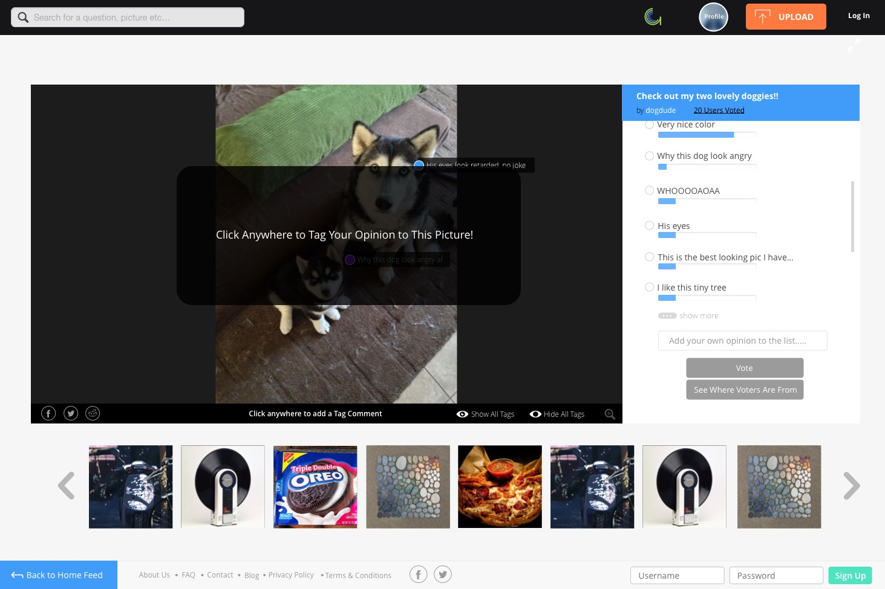
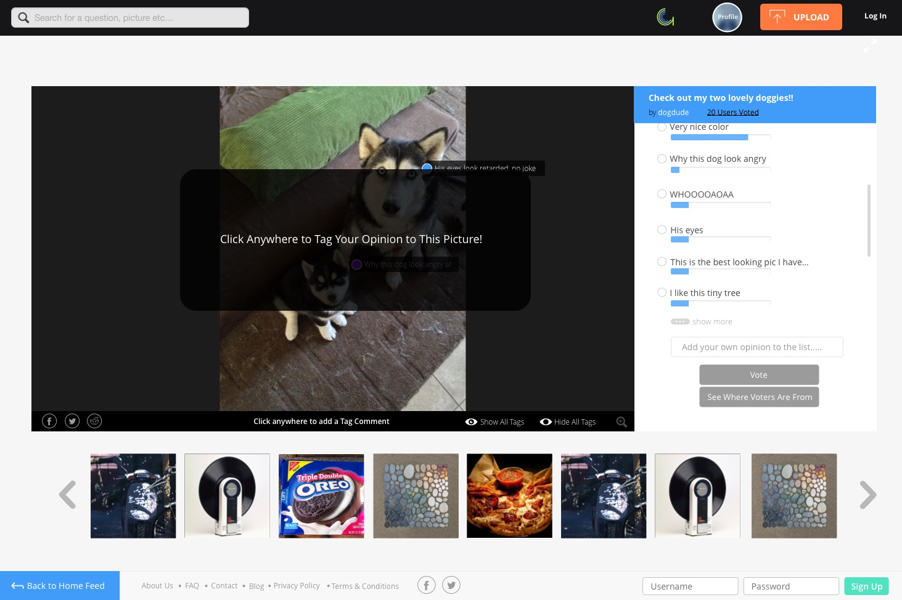

Project Scope
Imagemoji was a web product I took part in designing and developing with Arima, a small startup in Toronto, Canada. In our team of 5, we wanted to creat a fun, delightful site where the feeling of reading comments and watching a GIF is combined.
How Might We:Create a new, delightful experience of commenting on pictures via directly typing on top of an image.
Create a social website around image hosting.
My Role: Product Designer, Front End Web Developer.
How the Fun Parts of Imagemoji Works
Users can browse a home feed where they can check out pictures that interest them.
Users can then see a stream of comments popping in and out on the picture. They can also add their own comments anywhere on the image to join the conversation!
At its heyday, Imagemoji had over 15,000 people use it and over 20,000 tag comments!
Ideation & Inspiration
Our first inspiration came from a commenting style found on the popular Japanese video sharing site Nico Nico Douga. Users type in a chat box and their comments are streamed across the video in real time for everyone to see.
Initial InsightsUsers don't seem to mind the comments blocking the video, they are actually there to read what other people think rather than enjoy the video.
Comments are what gives the content its juice in terms of interaction from everyone, we can leverage this concept
Our second inspiration came from the established design pattern of tagging photos on popular image sharing sites such as Facebook
The first mock ups
 

We first tried to emulate Nico Nico Douga by having a comment box to the side of the image, where people can vote for the most popular tag comments in addition to being able to add comments directly on the image
Why?We assumed this would be a familiar mode of commenting for new users, and that the voting can regulate how many comments show up at a time
InsightsAfter designing the UI, something still didn't feel right. Seemed over complicated!
It made sense to get rid of all the excess UI, and keep it simple. We found out we could make space for upvotes on the tag comments, so people can self-regulate in some form. We also added in buttons where a user can hide or show the tags, in case the comments were bothersome to users who do not like reading them.
But wait!! Why build all of these features without testing if people will actually understand using tag comments?
Implementation
We built the barebones that's needed for the tag comments to work, and deployed it. We posted the image to a popular image subreddit on Reddit to attract users.
Why?We made an MVP quickly to test the waters, we didn't want to waste time making everything perfect only to have the core idea not work.
ResultsIt worked! It worked so well that very quickly the image was filled with tag comments. This pattern repeated itself multiple times on other images we shared.
InsightsWe leveraged the common design pattern of tagging photos, and added a few tag comments ourselves so that when the user lands on the image, he/she may get an idea of how to interact.
With our assumptions validated by these user tests, we moved forward with creating an upvote/downvote system, rotating tags that pop in and out, and other features.
Additional Design Features After MVP Deploy
Crowd Moderation Features
We let the users themselves moderate tag comments. Upvoted tags become bigger, and downvoted tags become smaller.
Why?We thought this system can facilitate fun interaction amongst the users where people can compete to grow their own comments, and also because most of our traffic came from Reddit where upvote/downvote is the norm.
InsightsTags became enormous because of the number of upvotes they had, so we decided to cap off the growth of tags to 20 upvotes. Additionally, downvotes would make tags smaller.
Downvotes that went below -1 goes into the Graveyard, so it won't appear on the image anymore but users can still take a look if they want.
Why?There were so many tags appearing on the image, we had to find a way to curate the best ones and "sacrifice" less popular comments much like comment threads on Reddit.
We also made the tags pop in and out in groups of 3 or 5, so that only a few tags appear at a time and not cover up the image. This created a feeling of "live" as users thought the comments were being streamed in and out in real time.
User Profile Pages
A user profile pages was in the works when we wanted to give users incentive to sign up, upload their own pictures, and keep track of their uploads and tags. Unfortunately, out of the 15,000+ people that visited and commented, no one signed up. As a result the profiles pages were never implemented.
Here's a summary of what I personally contributed in this project:
What I Did
Designed the UI and UX of the website, coded the front end as well.
Pivoted multiple times with the team after each major deployment.
What I Learned
As the sole designer of my team, I greatly improved my visual design skills and learned how to fine tune web UI using code.
Be willing to change. A startup product must find a way to pivot and adapt, or fail!
Here are some more projects of mine